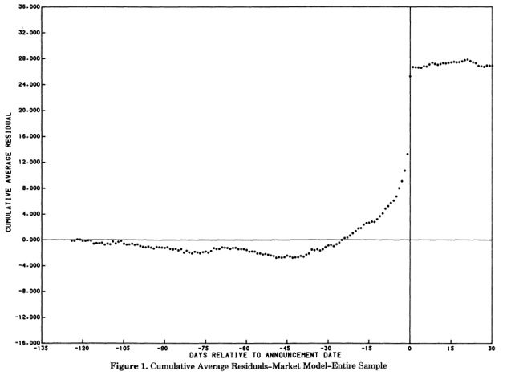

Market Efficiency
FIN 223 Lecture 5
Andrew Ainsworth
University of Wollongong
Lecture outline
- What does the Efficient Market Hypothesis (EMH) imply?
- Do prices reflect all available information?
- Anomalies
- There are well-known trading strategies that have generated positive returns
- Are the returns to anomaly strategies compensation for risk?
- How can we assess whether markets are responding to information?
- We can employ the event study methodology
- Reading
- BKM Ch. 8
- Asness, C. and Liew, J. (2014) “The Great Divide over Market Efficiency”, Institutional Investor, Vol. 48(3), p. 41.
Are markets efficient?
Determination of prices
- A share’s value is the present value of expected future cash flows:
\[\text{Value of Share} = \sum_{t=1}^T \frac{E(C_t)}{[1+E(R)]^t}\]
- Present value model requires information on:
- Future cash flows (i.e. dividends or FCF)
- Risk via the cost of capital
- Market bases expectations on this information
- Prices respond to changes in expectations
- Changes in expectations arise from new information
- Therefore, prices change as new information arrives
Market efficiency
- In an efficient market, new information is incorporated into prices in an instantaneous and unbiased manner
- There are two components to efficiency:
- Informational efficiency
- Reflects speed at which new information in incorporated into prices
- Market rationality
- New information is correctly incorporated into stock prices
- If markets are efficient investors cannot use information to consistently earn excess returns
- New information is unpredictable
- If it could be predicted, then the prediction would be part of today’s information
- Stock prices are unpredictable because information is unpredictable
Market efficiency
Market efficiency
- What makes investors want to trade until prices reflect information?
- Information-gathering is motivated by desire for higher investment returns
- The marginal return on research activity may be so small that only managers of the largest portfolios will find them worth pursuing
- In an efficient market, the marginal cost of obtaining and acting on information should not exceed the marginal benefit derived from such actions
- Inefficiencies that are not economically exploitable can still be consistent with an efficient market
- If markets were inefficient, resources would be systematically misallocated
- Firm with overvalued securities can raise capital too cheaply
- Firm with undervalued securities may have to pass up profitable opportunities because cost of capital is too high
Market efficiency
- Market efficiency does not imply predictability
- It is actually inefficiency that implies predictability
- Market efficiency does not state that prices are not randomly set
- Information arrives randomly and therefore prices move randomly
- Large movements in prices can be consistent with efficiency
- Expected returns do not need to equal observed return
- Market efficiency does not say that all investors will perform equally
- Some investors will win and some investors will lose
Classes of information
- Weak form
- Do current market prices fully reflect information contained in past prices and volume?
- Semi-strong form
- Do prices incorporate publicly available information?
- This information includes financial reports, press releases, stock exchange announcements, capital structure changes and takeover announcements
- Strong form
- Does the possession of private information leads to excess returns?
- Is insider trading profitable?
How important is time for investors?

Anomalies
- What is an anomaly?
- “Something that deviates from what is standard, normal, or expected”
- http://www.oxforddictionaries.com/definition/english/anomaly
- Schwert’s (2003) finance definition of an anomaly
- “Anomalies are empirical results that seem to be inconsistent with maintained theories of asset-pricing behavior”
- Anomalies are about predicting future returns using a signal
Calculating anomaly returns
- Each stock has a value for the various characteristic measures (e.g. trading volume, market capitalisation, book-to-market ratio, ROE, P/E, etc…)
- Use the signal based on a particular stock characteristic to rank stocks into portfolios
- Let’s use market cap (size) based on the end-of-year market cap (31 Dec 2024)
Universe of stocks
Calculating anomaly returns
Small Cap
Large Cap
- We can calculate the return of each portfolio for each month after we have ranked the stocks (i.e. Jan 2025, Feb 2025, etc)
- The difference between the returns on the extreme portfolios is the premium, or the return on the anomaly
- In this case buy the small cap portfolio and short-sell the large-cap portfolio
\[ \text{Anomaly Return}_t = R_{Small, t} - R_{Large, t}\]
The joint test problem
- Any test of market efficiency necessarily compares returns against some benchmark model
- A benchmark for the expected return is required before we can measure excess returns
- One possible benchmark is a formal asset pricing model, such as the capital asset pricing model (CAPM)
- Hence, to define excess returns in order to test market efficiency, a model for expected return is first required
- Thus, any test of market efficiency is inherently a joint test of market efficiency and the model of expected return
Selected anomaly strategies
- Price momentum: purchase stocks with the highest returns over the past 12 months and to short-sell stocks with the lowest returns over the past 12 months (Jegadeesh and Titman (1993))
- Size effect: take a long positions in a portfolio of small firms and short positions in a portfolio of large firms (Banz (1981))
- The relationship between firm size and abnormal returns is not linear
- The size effect is concentrated in the smallest decile of firms
- Half of the size premium occurs in January and is concentrated in the first five trading days of the new calendar year
- Value effect: Value shares outperform growth shares (Fama and French (1992))
- Growth shares have low book-to-market ratios while value shares have high book-to-market ratios
- Profitability premium: Firms with high profitability outperform firms with low profitability (Novy-Marx (2013))
Momentum anomaly returns
Momentum anomaly returns
Momentum anomaly returns
Firm size anomaly returns
Firm size anomaly returns
Value vs. growth anomaly returns
Profitability anomaly returns
Event studies
- Abnormal returns are the difference between actual returns and expected returns
- Abnormal returns are risk-adjusted returns
- We can sum up abnormal returns over time to measure cumulative abnormal returns (CARs)
- If we were using the CAPM as our asset pricing model then expected returns would be related to a firm’s beta and the actual market risk premium
- The study of abnormal returns around announcements or particular events are called event studies
Estimating abnormal returns
- Use the CAPM (single-index model) and historical data to estimate the stock’s \(\alpha\) and \(\beta\)
- You could use monthly returns over a 36 to 60 month window or daily returns over a 30 to 252 day window
\[R_{it}-R_{ft} = \alpha_i + \beta_i(R_{mt}-R_{ft}) + \varepsilon _{it}\]
- Collect \(\hat{\beta_i}\) and \(\hat{\alpha_i}\)
- Use actual market return and risk-free return, combined with estimates of \(\hat{\beta_i}\) and \(\hat{\alpha_i}\) to calculate what you would expect returns to have been for the stock
\[E(R_{i,Jan2025}) = R_{f,Jan2025} = \hat{\alpha_i} + \hat{\beta_i}(R_{m,Jan2025}-R_{f,Jan2025})\]
- Then you can calculate the abnormal return for stock \(i\)
\[ \begin{align} \text{Abnormal Return} &= \text{Actual Return} - \text{Expected Return}\\[3px] AR_{i,Jan2025} &= R_{i,Jan2025} - E(R_{i,Jan2025}) \end{align} \]
Efficiency and news
- How do prices respond to information announcements?
- This tests the semi-strong form of EMH
- Information announcements
- Takeovers
- Accounting information
- Earnings announcements
- Components of earnings
- Dividend information
- Post-earnings announcement drift
- The event study methodology can be used to evaluate the anomaly
Abnormal returns of takeover targets
Source: Keown and Pinkerton (1981)
Post-earnings announcement drift
- We can examine standardized unexpected earnings (SUE) around earnings announcements
- Category 10 is the highest positive earnings surprise
- Category 1 is the most negative earnings surprise
Post-earnings announcement drift
- What would we expect to see in an efficient market?
Conclusion
- Prices react in an instantaneous and unbiased manner to the arrival of new information in an efficient market
- We can use event studies to identify how prices react
- Are the returns from anomaly strategies really anomalous
- Are they the result of data mining?
- Are the anomalies compensation for taking on additional risk?
- Do studies adequately control for all other risk factors and other potential explanations?